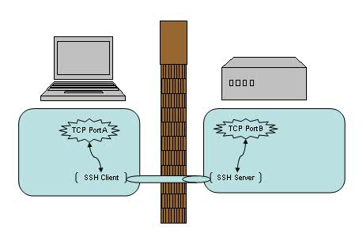
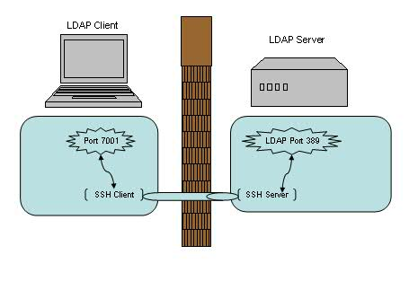
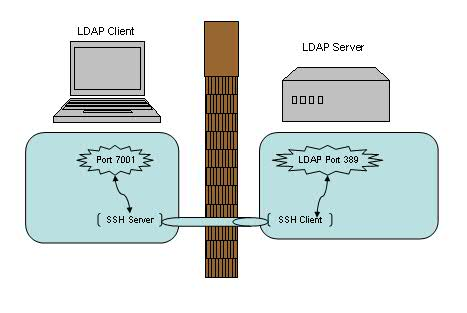
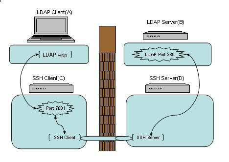
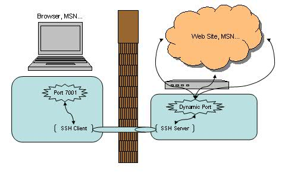

[转]实战SSH端口转发
概述
当你在咖啡馆享受免费 WiFi 的时候，有没有想到可能有人正在窃取你的密码及隐私信息？当你发现实验室的防火墙阻止了你的网络应用端口，是不是有苦难言？来看看 SSH 的端口转发功能能给我们带来什么好处吧！
端口转发概述
让我们先来了解一下端口转发的概念吧。我们知道，SSH 会自动加密和解密所有 SSH 客户端与服务端之间的网络数据。但是，SSH 还同时提供了一个非常有用的功能，这就是端口转发。它能够将其他 TCP 端口的网络数据通过 SSH 链接来转发，并且自动提供了相应的加密及解密服务。这一过程有时也被叫做“隧道”（tunneling），这是因为 SSH 为其他 TCP 链接提供了一个安全的通道来进行传输而得名。例如，Telnet，SMTP，LDAP 这些 TCP 应用均能够从中得益，避免了用户名，密码以及隐私信息的明文传输。而与此同时，如果您工作环境中的防火墙限制了一些网络端口的使用，但是允许 SSH 的连接，那么也是能够通过将 TCP 端口转发来使用 SSH 进行通讯。总的来说 SSH 端口转发能够提供两大功能：
- 加密 SSH Client 端至 SSH Server 端之间的通讯数据。
- 突破防火墙的限制完成一些之前无法建立的 TCP 连接。

如上图所示，使用了端口转发之后，TCP 端口 A 与 B 之间现在并不直接通讯，而是转发到了 SSH 客户端及服务端来通讯，从而自动实现了数据加密并同时绕过了防火墙的限制。
本地转发与远程转发
本地转发实例分析
我们先来看第一个例子，在实验室里有一台 LDAP 服务器（LdapServerHost），但是限制了只有本机上部署的应用才能直接连接此 LDAP 服务器。如果我们由于调试或者测试的需要想临时从远程机器（LdapClientHost）直接连接到这个 LDAP 服务器 , 有什么方法能够实现呢？
答案无疑是本地端口转发了，它的命令格式是：
ssh -L <local port>:<remote host>:<remote port> <SSH hostname>
在 LdapClientHost 上执行如下命令即可建立一个 SSH 的本地端口转发，例如：
$ ssh -L 7001:localhost:389 LdapServerHost

这里需要注意的是本例中我们选择了 7001 端口作为本地的监听端口，在选择端口号时要注意非管理员帐号是无权绑定 1-1023 端口的，所以一般是选用一个 1024-65535 之间的并且尚未使用的端口号即可。
然后我们可以将远程机器（LdapClientHost）上的应用直接配置到本机的 7001 端口上（而不是 LDAP 服务器的 389 端口上）。之后的数据流将会是下面这个样子：
1. 我们在 LdapClientHost 上的应用将数据发送到本机的 7001 端口上，
2. 而本机的 SSH Client 会将 7001 端口收到的数据加密并转发到 LdapServertHost 的 SSH Server 上。
3. SSH Server 会解密收到的数据并将之转发到监听的 LDAP 389 端口上，
4. 最后再将从 LDAP 返回的数据原路返回以完成整个流程。
5. 我们可以看到，这整个流程应用并没有直接连接 LDAP 服务器，而是连接到了本地的一个监听端口，
但是 SSH 端口转发完成了剩下的所有事情，加密，转发，解密，通讯。
这里有几个地方需要注意：
- SSH 端口转发是通过 SSH 连接建立起来的，我们必须保持这个 SSH 连接以使端口转发保持生效。一旦关闭了此连接，相应的端口转发也会随之关闭。
- 我们只能在建立 SSH 连接的同时创建端口转发，而不能给一个已经存在的 SSH 连接增加端口转发。
- 你可能会疑惑上面命令中的
为什么用 localhost，它指向的是哪台机器呢？在本例中，它指向 LdapServertHost 。我们为什么用 localhost 而不是 IP 地址或者主机名呢？其实这个取决于我们之前是如何限制 LDAP 只有本机才能访问。如果只允许 lookback 接口访问的话，那么自然就只有 localhost 或者 IP 为 127.0.0.1 才能访问了，而不能用真实 IP 或者主机名。 - 命令中的
和 必须是同一台机器么？其实是不一定的，它们可以是两台不同的机器。我们在后面的例子里会详细阐述这点。
好了，我们已经在 LdapClientHost 建立了端口转发，那么这个端口转发可以被其他机器使用么？比如能否新增加一台 LdapClientHost2 来直接连接 LdapClientHost 的 7001 端口？答案是不行的，在主流 SSH 实现中，本地端口转发绑定的是 lookback 接口，这意味着只有 localhost 或者 127.0.0.1 才能使用本机的端口转发 , 其他机器发起的连接只会得到“ connection refused. ”。好在 SSH 同时提供了 GatewayPorts 关键字，我们可以通过指定它与其他机器共享这个本地端口转发。
ssh -g -L <local port>:<remote host>:<remote port> <SSH hostname>
远程转发实例分析
我们来看第二个例子，这次假设由于网络或防火墙的原因我们不能用 SSH 直接从 LdapClientHost 连接到 LDAP 服务器（LdapServertHost），但是反向连接却是被允许的。那此时我们的选择自然就是远程端口转发了。
它的命令格式是：
ssh -R <local port>:<remote host>:<remote port> <SSH hostname>
例如在 LDAP 服务器（LdapServertHost）端执行如下命令：
$ ssh -R 7001:localhost:389 LdapClientHost

和本地端口转发相比，这次的图里，SSH Server 和 SSH Client 的位置对调了一下，但是数据流依然是一样的。我们在 LdapClientHost 上的应用将数据发送到本机的 7001 端口上，而本机的 SSH Server 会将 7001 端口收到的数据加密并转发到 LdapServertHost 的 SSH Client 上。 SSH Client 会解密收到的数据并将之转发到监听的 LDAP 389 端口上，最后再将从 LDAP 返回的数据原路返回以完成整个流程。
看到这里，你是不是会有点糊涂了么？为什么叫本地转发，而有时又叫远程转发？这两者有什么区别？
本地转发与远程转发的对比与分析
不错，SSH Server，SSH Client，LdapServertHost，LdapClientHost，本地转发，远程转发，这么多的名词的确容易让人糊涂。让我们来分析一下其中的结构吧。首先，SSH 端口转发自然需要 SSH 连接，而 SSH 连接是有方向的，从 SSH Client 到 SSH Server 。而我们的应用也是有方向的，比如需要连接 LDAP Server 时，LDAP Server 自然就是 Server 端，我们应用连接的方向也是从应用的 Client 端连接到应用的 Server 端。如果这两个连接的方向一致，那我们就说它是本地转发。而如果两个方向不一致，我们就说它是远程转发。
我们可以回忆上面的两个例子来做个对照。
- 本地转发时： LdapClientHost 同时是应用的客户端，也是 SSH Client，这两个连接都从它指向 LdapServertHost（既是 LDAP 服务端，也是 SSH Server）。
- 远程转发时： LdapClientHost 是应用的客户端，但却是 SSH Server ；而 LdapServertHost 是 LDAP 的服务端，但却是 SSH Client 。这样两个连接的方向刚好相反。
另一个方便记忆的方法是，Server 端的端口都是预定义的固定端口（SSH Server 的端口 22，LDAP 的端口 389），而 Client 端的端口都是动态可供我们选择的端口（如上述例子中选用的 7001 端口）。
- 如果 Server 端的两个端口都在同一台机器，Client 端的两个端口都在另一台机器上，那么这就是本地连接；
- 如果这四个端口交叉分布在两个机器上，每台机器各有一个 Server 端端口，一个 Client 端端口，那就是远程连接。
弄清楚了两者的区别之后，再来看看两者的相同之处。如果你所在的环境下，既允许 LdapClientHost 发起 SSH 连接到 LdapServerHost，也允许 LdapServerHost 发起 SSH 连接到 LdapClientHost 。那么这时我们选择本地转发或远程转发都是可以的，能完成一样的功能。
接着让我们来看个进阶版的端口转发。我们之前涉及到的各种连接 / 转发都只涉及到了两台机器，还记得我们在本地转发中提到的一个问题么？本地转发命令中的
ssh -L <local port>:<remote host>:<remote port> <SSH hostname>
答案是可以的！让我们来看一个涉及到四台机器 (A,B,C,D) 的例子。

在 SSH Client(C) 执行下列命令来建立 SSH 连接以及端口转发：
$ ssh -g -L 7001:<B>:389 <D>
然后在我们的应用客户端 (A) 上配置连接机器 (C) 的 7001 端口即可。注意我们在命令中指定了 “-g” 参数以保证机器 (A) 能够使用机器 (C) 建立的本地端口转发。而另一个值得注意的地方是，在上述连接中，(A)<--->(C) 以及 (B)<--->(D) 之间的连接并不是安全连接，它们之间没有经过 SSH 的加密及解密。如果他们之间的网络并不是值得信赖的网络连接，我们就需要谨慎使用这种连接方式了。
其他类型的转发
动态转发实例分析
恩，动态转发，听上去很酷。当你看到这里时，有没有想过我们已经讨论过了本地转发，远程转发，但是前提都是要求有一个固定的应用服务端的端口号，例如前面例子中的 LDAP 服务端的 389 端口。那如果没有这个端口号怎么办？等等，什么样的应用会没有这个端口号呢？嗯，比如说用浏览器进行 Web 浏览，比如说 MSN 等等。
当我们在一个不安全的 WiFi 环境下上网，用 SSH 动态转发来保护我们的网页浏览及 MSN 信息无疑是十分必要的。让我们先来看一下动态转发的命令格式：
$ ssh -D <local port> <SSH Server>
例如：
$ ssh -D 7001 <SSH Server>

似乎很简单，我们依然选择了 7001 作为本地的端口号，其实在这里 SSH 是创建了一个 SOCKS 代理服务。来看看帮助文档中对 -D 参数的描述：
-D port
This works by allocating a socket to listen to port on the local
side, and whenever a connection is made to this port, the con-
nection is forwarded over the secure channel, and the applica-
tion protocol is then used to determine where to connect to from
the remote machine. Currently the SOCKS4 and SOCKS5 protocols
are supported, and ssh will act as a SOCKS server. Only root
can forward privileged ports. Dynamic port forwardings can also
be specified in the configuration file.
之后的使用就简单了，我们可以直接使用 localhost:7001 来作为正常的 SOCKS 代理来使用，直接在浏览器或 MSN 上设置即可。在 SSH Client 端无法访问的网站现在也都可以正常浏览。而这里需要值得注意的是，此时 SSH 所包护的范围只包括从浏览器端（SSH Client 端）到 SSH Server 端的连接，并不包含从 SSH Server 端 到目标网站的连接。如果后半截连接的安全不能得到充分的保证的话，这种方式仍不是合适的解决方案。
X 协议转发实例分析
好了，让我们来看最后一个例子 - X 协议转发。
我们日常工作当中，可能会经常会远程登录到 Linux/Unix/Solaris/HP 等机器上去做一些开发或者维护，也经常需要以 GUI 方式运行一些程序，比如要求图形化界面来安装 DB2/WebSphere 等等。这时候通常有两种选择来实现：VNC 或者 X 窗口，让我们来看看后者。
使用 X 窗口通常需要分别安装：X Client 和 X Server 。在本例中我们的 X Client 就是所访问的远程 Linux/Unix/Solaris/HP，而我们的 X Server 则是发起访问的本地机器（例如你面前正在使用的笔记本或台式机）。把 X Client 端的 X 窗口显示在 X Server 端需要先行在 X Client 端指定 X Server 的位置，命令格式如下：
export DISPLAY=<X Server IP>:<display>.<virtual>
例如：
export DISPLAY=myDesktop:1.0
然后直接运行 X 应用即可，X 窗口就会自动在我们的本地端打开。
一切运行正常，但是，这时候 IT 部门突然在远程 Linux/Unix/Solaris/HP 前面加了一道防火墙。非常不幸的是，X 协议并不在允许通过的列表之内。怎么办？只能使用 VNC 了么？不，其实只要使用了 SSH 端口转发即可通过，同时也对 X 通讯数据做了加密，真是一举两得。（当然，使用此方法前最好先咨询相关 IT 部门是否符合相应的安全条例，以免造成违规操作。）
建立命令也很简单，直接从本地机器（X Server 端）发起一个如下的 SSH 连接即可：
$ ssh -X <SSH Server>
建立连接之后就可以直接运行远程的 X 应用。注意建立 X 转发之后会自动设置 DISPLAY 环境变量，通常会被设置成localhost:10.0，我们无需也不应该在连接之后再进行修改此环境变量。
一个比较常见的场景是，我们的本地机器是 Windows 操作系统，这时可以选择开源的 XMing 来作为我们的 XServer，而 SSH Client 则可以任意选择了，例如 PuTTY，Cygwin 均可以配置 访问 SSH 的同时建立 X 转发。
总结
至此，我们已经完成了本地端口转发，远程端口转发，动态端口转发以及 X 转发的介绍。回顾起来，总的思路是通过将 TCP 连接转发到 SSH 通道上以解决数据加密以及突破防火墙的种种限制。对一些已知端口号的应用，例如 Telnet/LDAP/SMTP，我们可以使用本地端口转发或者远程端口转发来达到目的。动态端口转发则可以实现 SOCKS 代理从而加密以及突破防火墙对 Web 浏览的限制。对于 X 应用，无疑是 X 转发最为适用了。虽然每一部分我们都只是简单的介绍了一下，但如果能灵活应用这些技巧，相信对我们的日常生活和工作也是会有所帮助的。
转载请注明来源，欢迎对文章中的引用来源进行考证，欢迎指出任何有错误或不够清晰的表达。可以在下面评论区评论，也可以邮件至 [ yehuohan@gmail.com ]
文章标题:[转]实战SSH端口转发
本文作者:z000tech
发布时间:2018-04-20, 10:49:40
最后更新:2020-07-16, 16:37:45
原始链接:http://yehuohan.github.io/2018/04/20/杂记/实战SSH端口转发/版权声明: "署名-非商用-相同方式共享 4.0" 转载请保留原文链接及作者。